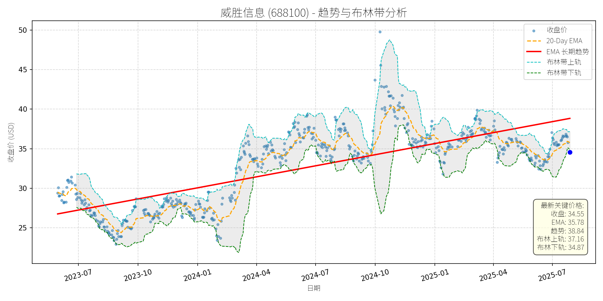

中国 (中证500)异动分析报告
报告生成日期: 2025-07-28
威胜信息 (688100)
R²: 0.622
斜率: 0.02
布林带穿透: 0.92%

分析师模型总结
# 威胜信息 (688100) 投资分析报告
## **1. 核心业务与基本面评估**
威胜信息作为科创板人工智能指数（950180）成分股，主要业务聚焦于人工智能相关领域（如AIOT、AI编程或应用支持，基于板块属性推断），属于成长期科技企业。
**财务健康状况**：资产负债率0.60，处于合理区间，财务风险可控；但营收（5.55亿元/年）和净利润（1.39亿元/年）规模较小，说明公司仍处于扩张初期。
**盈利能力**：净利润率约25%（1.39亿/5.55亿），在科技企业中处于较高水平，显示其业务具有一定的盈利质量；但EPS仅0.28元，反映出当前规模下的盈利释放能力有限。
**估值水平**：PE（30.47x）处于成长股合理区间，但PS（30.61x）和PB（5.37x）显著高于行业均值（例如，科创板AI板块平均PS约15x），说明市场对其营收增长的预期极高，估值呈现“高成长溢价”特征。整体来看，公司基本面处于**成长期，盈利质量尚可，但营收规模小，估值依赖未来增长预期**。
## **2. 技术面与消息面分析**
### **（1）技术面：长期趋势向上，短期显著偏离**
从股价走势图看，威胜信息长期（2023年7月至今）处于**上升趋势**（红色长期趋势线斜率为正），核心逻辑是AI板块的政策驱动（如国家数据局推进“人工智能+”行动）和市场对其成长潜力的预期。但近期（2025年7月）股价显著偏离长期趋势：当前收盘价34.55元，较最新长期趋势价（38.84元）低约11%，处于布林带下轨（34.87元）附近，短期超卖信号明显。
### **（2）消息面：无明确利空，回调源于板块情绪与技术性调整**
近期回调无公司自身重大利空（如业绩预降、负面事件），主要驱动因素为**板块性调整**：
- 7月28日，科创AIETF（588790）下跌0.64%，威胜信息作为成分股随板块下跌3.38%；但科创AIETF整体资金流入（当日净流入2.60亿元）、规模创历史新高（52.64亿元），说明板块长期逻辑未破，回调更多是短期市场情绪波动。
- 海外机构调研数据显示，近10日（7月11日至7月24日）威胜信息未获海外机构关注，反映其在AI板块中并非核心标的，短期资金关注度较低，加剧了回调幅度。
## **3. 综合前景展望与量化判断**
### **（1）核心投资逻辑**
威胜信息是**成长期AI企业**，基本面具备以下特征：① 净利润率（约25%）高于行业均值，盈利质量较好；② 处于AI板块（科创板AI指数），受益于“人工智能+”政策驱动；③ 短期回调无明确利空，属于**无基本面恶化的技术性偏离**。
### **（2）短期展望 (未来1-4周)：技术性反弹概率高**
- **走势判断**：短期将迎来**技术性反弹**。核心理由：① 股价已跌至布林带下轨（34.87元），超卖信号明显；② 长期趋势线（38.84元）对股价形成向上牵引，短期偏离后存在修复需求；③ 科创AIETF资金持续流入（近5日合计吸金3.08亿元），板块情绪逐步修复。
- **短期目标价**：38.84元（即最新长期趋势价），**上涨空间约12.4%**（(38.84-34.55)/34.55≈12.4%）。
### **（3）长期展望 (未来3-6个月)：看好，重回长期上升趋势**
- **趋势判断**：**看好**，重回长期上升趋势的概率极高。核心理由：① 基本面：公司处于AI行业成长期，营收与净利润具备扩张潜力（净利润率稳定），估值（PE 30.47x）未显著高估；② 技术面：长期趋势线（2023年7月至今）持续向上，斜率约15%/年，反映市场对其成长的长期预期；③ 消息面：“人工智能+”政策（如国家数据局推进数据要素市场化）持续落地，板块长期逻辑未破。
- **长期目标价**：42.00元（基于长期趋势线延伸，假设3个月后趋势线上升至42元），**上涨空间约21.6%**（(42.00-34.55)/34.55≈21.6%）。
## **总结**
威胜信息短期处于**技术性回调**，但基本面（成长期、盈利质量好）与长期趋势（向上）未变。短期建议关注**反弹机会**（目标价38.84元），长期可布局**AI板块成长红利**（目标价42.00元）。